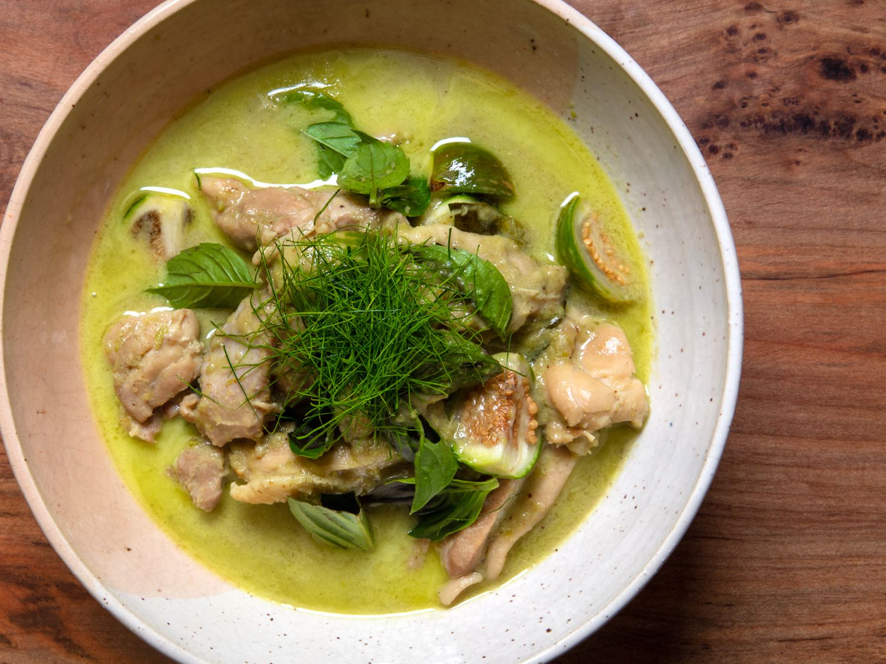

Thai Green Curry

An Easy College Recipe for College Students to create an Authentic Thai Dish!
Having been to Thailand, this has to be one of
my favourite dishes! The photo is an authentic Thai green curry
Ingredients
- 2 Chicken breasts
- 1 can coconut milk, or low fat coconut milk
- 1 Onion
- 1 Aubergine
- 1 Chopped green chilli
- Thai Green Curry Paste
Method
- 1) To make the curry, cook the paste in a large non-‐stick wok or large frying
pan over a low heat, for 5 minutes. Cut the chicken into strips and add to the
pan with the chopped onion. Cook for 5-‐8 minutes or until no longer pink. Add
the aubergine chopped.
- 2) Stir in the coconut milk and simmer for about 10 minutes or until the
chicken is cooked through. Scatter over the chilli and serve with rice.